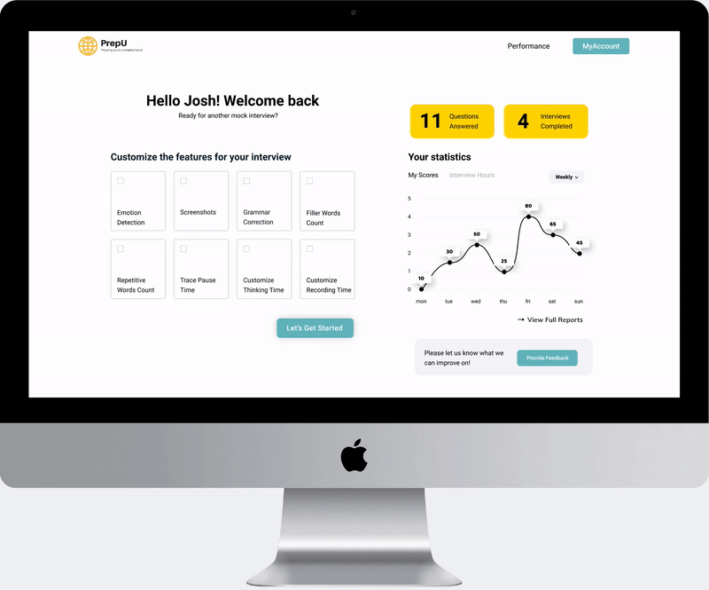
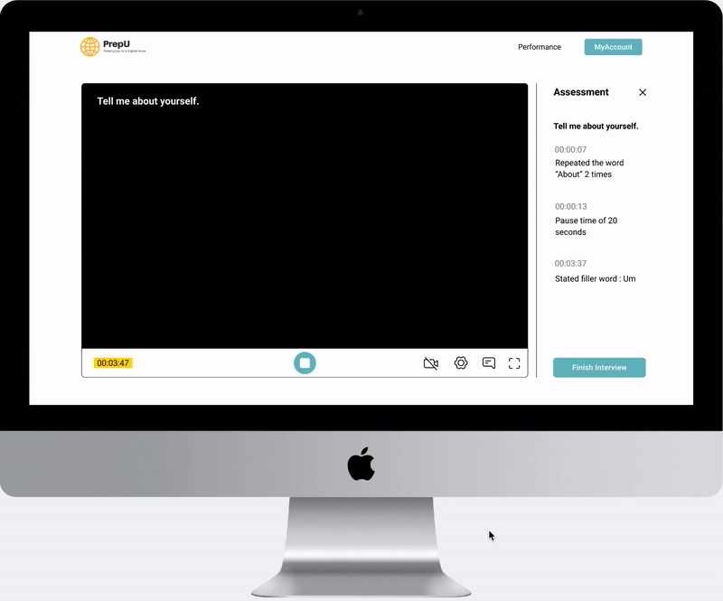
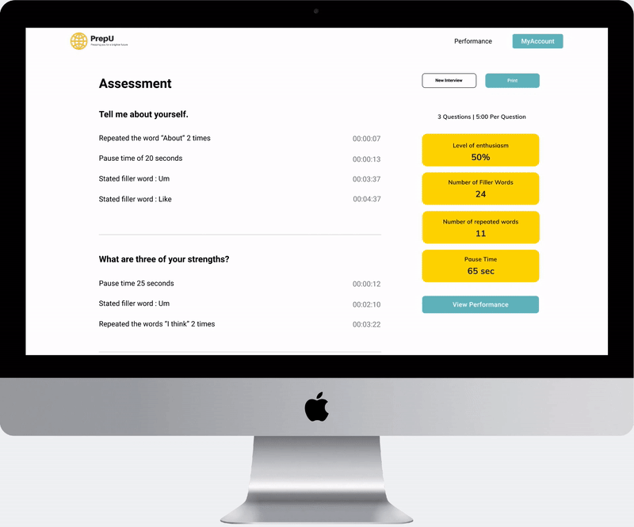

With the use of voice and emotion recognition AI, our platform analyzes the user’s mock
interview live by providing accurate, detailed feedback using machine algorithm.


Personalized Accessment
Users can customize their settings to focus on different features that affect interview performance the
most. This includes emotion, body language, grammar, pauses, repetition and attire. Users can also
turn on and off functions to focus on different forms of interviews.
Constant Feedback
Questions are asked throughout the interview, and generated feedback can be toggled to be shown live on the
side to allow them to fix continuous mistakes while presenting.


Meaningful Insights
The user will be shown a summary of feedback based on the interview and features they wished to focus on.
On the performance page, the user could compare and view their past interview performance from each
mock interview,
so they can better identify their frequent mistakes.
The user will be shown a summary of feedback based on the interview and the features they wish to focus on.
On the performance page, the user could compare and view their past performance from each mock
interview to better identify their frequent mistakes.